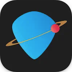
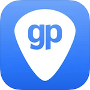
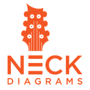
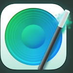

<!doctype html>
<html>
  <head>
    <link rel="stylesheet" href="style.css">
    <title>Music Applications</title>
  </head>
</html>

<body>
  
  <center><h1>Just some Music Apps I use...</h1></center>
  
  <div class="table">
    
  <div class="rowheader">
    <div class="cellheader">Application</div>
    <div class="cellheader">Description</div>
  </div>

  <div class="row">
    <div class="cell center">Audacity <br> </div>
    <div class="cell">Audacity is a free and open-source digital audio editor and recording application software, available for Windows, macOS, Linux, and other Unix-like operating systems.</div>
  </div>

    <div class="row">
    <div class="cell center">Audiobus <br>  <br> iPad</div>
    <div class="cell">Audiobus is the Mixer for music apps. This app makes your other music apps better. Audiobus is like a set of virtual cables: you can plug one app into another, into another.</div>
  </div>

  <div class="row">
    <div class="cell center">Bias Amp 2 <br> </div>
    <div class="cell">BIAS AMP 2 Mobile is a professional virtual amp designer that offers replications of the best vintage, modern and boutique amps in rock. The app gives you the power to create new sounds by designing your own amplifier, letting you swap out tubes, preamps, power amps, transformers, tone stacks, cab, and microphones, all via a powerful and intuitive interface.</div>
  </div>

  <div class="row">
    <div class="cell center">Bias FX <br> </div>
    <div class="cell">BIAS FX turns your iOS device into an intuitive, portable and powerful guitar and bass effects processor. Take a massive collection of realistic sounding amps and effects to your next jam session, or to the stage.</div>
  </div>
  
  <div class="row">
    <div class="cell center">Bias FX 2 <br> </div>
    <div class="cell">Bias FX 2 is an award-winning amp-and-effects processor that turns your computer or mobile device into a fully customizable guitar and bass rig.</div>
  </div>

  <div class="row">
    <div class="cell center">Bias Pedal <br> </div>
    <div class="cell">Bias Pedal uses a similar component-based philosophy as BIAS Amp designer, Positive Grid's BIAS Pedal enables you to virtually create your own custom pedal, with full control over the pedal's circuit. Seamlessly integrated with BIAS FX, BIAS Pedal makes it possible to add your custom pedal to your BIAS FX pedalboard. Download thousands of customized pedals in our new BIAS Pedal ToneCloud®.</div>
  </div>

  <div class="row">
    <div class="cell center">BLE-MIDI <br> </div>
    <div class="cell">BLE-MIDI is Korg's Bluetooth MIDI Connect and allows you to easily connect Korg's Bluetooth MIDI compatible controllers such as microKEY Air, nanoKEY Studio, nanoKONTROL Studio wirelessly with your iPhone/iPad.</div>
  </div> 

  <div class="row">
    <div class="cell center">bx_console<br> </div>
    <div class="cell">The plugin version of this legendary console strip is the bx_console Focusrite SC, officially sanctioned by Focusrite. Like other plugins in the bx_console line, it offers 72 channels built with Brainworx's pioneering and patented Tolerance Modeling Technology, capturing the slight channel-to-channel variances for unparalleled depth, width and punch, just like the original Focusrite Studio Console.</div>
  </div> 
    
  <div class="row">
    <div class="cell center">Capo <br> </div>
    <div class="cell">Capo’s unique technology helps you to learn your favorites songs as you improve your ear along the way. Using the songs in your music collection, Capo guesses the beats, chords, and key of songs to help you break them down to their individual parts.</div>
  </div>  

  <div class="row">
    <div class="cell center">Chordbot <br>  <br> iPad</div>
    <div class="cell">Chordbot is the band in your hand - Create custom backing tracks instantly. Chordbot lets you create and play chord progressions in different styles easily. Just add chords, select instrument tracks and hit play.</div>
  </div>

  <div class="row">
    <div class="cell center">Fiddlicator <br>  <br> iPad</div>
    <div class="cell">Fiddlicator is an audio tool which can simulate various kinds of acoustic environment by the convolution of the input signal with a custom impulse response.
It was developed to simulate an acoustic body resonance for electric musical instruments (mainly the electric violin), but it can also be used for a cab simulation with proper impulse response files (not included).</div>
  </div>
    
  <div class="row">
    <div class="cell center">Focusrite Control <br> </div>
    <div class="cell">Focusrite Control controls your monitor mixes and preamp settings wirelessly from wherever you want in your studio.</div>
  </div>

  <div class="row">
    <div class="cell center">Garage Band <br>  <br> iPad</div>
    <div class="cell">GarageBand is a fully equipped music creation studio right inside your Mac. You can create with or without instrument.</div>
  </div>
    
  <div class="row">
    <div class="cell center">Guitar Gravitas <br> </div>
    <div class="cell">Guitar Gravitas is an inspirational tool for guitar players of all levels that offers the most comprehensive, advanced and interactive chord, arpeggio and scale library in the App Store. You can access millions of chord shapes, thousands of arpeggios and scale patterns, alternate tunings, chord, aperggio and scale finders, and much more.</div>
  </div>

  <div class="row">
    <div class="cell center">Guitar Jam Tracks <br> </div>
    <div class="cell">Guitar Jam Tracks is a practice buddy and scale trainer. It can also help you jam, improve your rhythm, and get comfortable performing with other musicians. Fun!</div>
  </div>

  <div class="row">
    <div class="cell center">Guitar Pro <br> </div>
    <div class="cell">Guitar Pro is the leading software for reading and editing tabs. For 25 years, Guitar Pro has been helping musicians worldwide learn to play the guitar, compose songs, and transcribe and edit songbooks.</div>
  </div>

  <div class="row">
    <div class="cell center">Guitar Toolkit <br> </div>
    <div class="cell">GuitarToolkit delivers all your essential guitar tools—tuner, metronome, chords, scales & arpeggios. Supports all your instruments! 6-, 7- and 12-string guitar, 4-, 5- and 6-string bass, ukulele, banjo and mandolin, each with standard & alternate tunings.</div>
  </div>

 <div class="row">
    <div class="cell center">JamUp <br>  <br> iPad</div>
    <div class="cell">JamUp is the #1 multi-effects processor for guitar and bass. Available for iPad and iPhone, JamUp gives you instant access to a ToneCloud® sharing community with over 10,000 presets from artists, users, and our own Positive Grid team. It’s designed to work seamlessly with BIAS Amp to create your ultimate guitar amp, and with more than 3 million users worldwide, JamUp has been featured in Macworld, Premier Guitar, Guitar World, Guitar Player and more.</div>
  </div>
    
  <div class="row">
    <div class="cell center">Logic Pro <br> </div>
    <div class="cell">Logic Pro is a full-featured music and audio app you can use for every aspect of music creation: recording, arranging, mixing, and more–everything from sketching your initial ideas to producing polished final mixes.</div>
  </div>

  <div class="row">
    <div class="cell center">Logic Remote <br>  <br>iPad</div>
    <div class="cell">Logic Remote is a companion app for Logic Pro and GarageBand on the Mac. It provides an innovative way to extend the creative power of Logic or GarageBand by using your iPad or iPhone. Designed to take full advantage of Multi-Touch, Logic Remote offers new ways to record, mix, and even perform instruments from anywhere in the room, turning your iPad or iPhone* into a mixer, transport control, and a flexible Touch Instrument.</div>
  </div>

  <div class="row">
    <div class="cell center">Loopy HD <br>  <br>iPad</div>
    <div class="cell">Loopy HD is a nice looper. Create music with Loopy HD by layering looped recordings of singing, beatboxing, or playing an instrument with a savvy, sophisticated, tactile looper that totally reinvents the formula.</div>
  </div> 

  <div class="row">
    <div class="cell center">Medly <br>  <br> iPad</div>
    <div class="cell">Medly helps everyone making music. From new to experienced, Medly has everything you need to unleash your musical spark. A Best of App Store 2016 winner, Medly’s simple interface is packed with advanced tools to create productions. Get started for free with the Starter Pack of 17 instruments and over 100 loops and samples.</div>
  </div>
    
  <div class="row">
    <div class="cell center">Music <br> </div>
    <div class="cell">Music Apple application.</div>
  </div>

  <div class="row">
    <div class="cell center"></div>
    <div class="cell">Neck Diagrams gives you a range of powerful tools to produce your own professional quality fretboard diagrams quickly, easily and in a range of formats.</div>
  </div>

  <div class="row">
    <div class="cell center">Newzik <br>  <br> iPad</div>
    <div class="cell">Newzik. Go paperless and discover the power of digital sheet music with our musical pdf reader. Listen to your scores thanks to our AI, collaborate instantly with your band, and benefit from all the tools you need in just one app.</div>
  </div>

  <div class="row">
    <div class="cell center">PA Installation Manager <br> </div>
    <div class="cell">PA Installation Manager is the most convenient way to download and install Plugin Alliance products. By simply downloading and installing the IM, you can quickly and easily browse the vast Plugin Alliance collection and select just the products you want to download and install on your system.</div>
  </div>

  <div class="row">
    <div class="cell center">Reaper <br> </div>
    <div class="cell">Digital Audio Workstation for PC, Mac, or Linux. Just add a hardware audio interface and a microphone and you will have a complete professional quality recording studio, suitable for recording anything from a soloist to a band to an orchestra.</div>
  </div>  

  <div class="row">
    <div class="cell center">Shazam <br> </div>
    <div class="cell">Shazam is an app that uses song recognition technology to detect and recognize a song that is playing remotely. Say you hear a song playing on the radio or TV that you enjoyed, but don't know the artist or song title. You can open the Shazam app, tap, and hold your phone close to the radio for about 10 seconds.</div>
  </div>
    
   <div class="row">
    <div class="cell center">Soundcorset <br>  <br>iPad</div>
    <div class="cell">Soundcorset is a Tuner & Metronome. A good free app for musicians. The most accurate chromatic tuner and professional hands-free metronome. Free sheet musics are available.. Designed by musicians - superfast and simple!</div>
  </div>

  <div class="row">
    <div class="cell center">Soundsource <br>  <br>Mac</div>
    <div class="cell">Get truly powerful control over all the audio on your Mac</div>
  </div>

  <div class="row">
    <div class="cell center">Suggester <br>  <br> iPad</div>
    <div class="cell">Suggester is a tool for writing songs and chord progressions. This app will help you find chords that work together.</div>
  </div>

  <div class="row">
    <div class="cell center">Tonebridge Guitar Effects <br> </div>
    <div class="cell">Tonebridge gives you the sound of the original sone out of the box. Plug your guitar into your Mac and start playing.</div>
  </div>

  <div class="row">
    <div class="cell center">Ultimate Guitar <br> </div>
    <div class="cell">Ultimate Guitar. Access the world's largest catalogue of guitar, bass & ukulele chords, tabs, and lyrics. Challenge yourself to learn your favourite songs and more!</div>
  </div>

  <div class="row">
    <div class="cell center">X Drummer <br> </div>
    <div class="cell">X Drummer is the ultimate drum production tool for guitarists, songwriters and mobile musicians. Start your musical journey by playing a simple riff on your guitar - X Drummer listens in real-time, searching for a matching drum performance based on the tempo and feel of your riff. The extensive groove library offers detailed realism, encompassing the subtle nuances of a real drummer and delivering realistic drum performances - not just generic backing tracks.</div>
  </div>

  <div class="row">
    <div class="cell center">Yamaha MDUD-BT01 <br> </div>
    <div class="cell">Yamaha MDUD-BT01, an MD-BT01/UD-BT01 Utility.</div>
  </div>
    
</div>
  
  <center><h2>It's not noise... It's medicine !!</h2></center>
  
</body>
